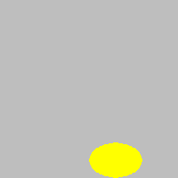

Crtanje pravokutnika, elipsa i krugova¶
Sve funkcije crtanja u biblioteci PyGame počinju s pg.draw. Ovisno o tome koji oblik želimo nacrtati, pozivamo različite funkcije. U objašnjenjima koja slijede značenje parametara je:
Parametar prozor je područje u kojem crtamo. Programi će u ovom vodiču već imati formiranu varijablu (točnije objekt) prozor, dobivenu kao rezultat poziva funkcije
pygamebg.open_window.Parametar boja je boja koju koristimo za crtanje. Kao što je ranije rečeno, boja se može odrediti imenom (na primjer
pg.Color("black")), ili kao n-torka ili lista dužine 3 (na primjer[255, 0, 0]za crvenu).Parametar pravokutinik je n-torka ili lista dužine četiri \((x, y, w, h)\) ili \([x, y, w, h]\), koja opisuje pravokutnik, kao što je objašnjeno ranije (koordinate gornje lijeve verte, širina i visina pravokutnika).
Parametar centar predstavlja neku točku. Kao što smo ranije spomenuli, točka se može navesti kao n-torka (ili lista) od 2 elementa, koji predstavljaju koordinate točke u prozoru u koji crtamo.
Parametar debljina je debljina linija koje koristimo za crtanje. U funkcijama koje ovdje objašnjavamo ovaj parametar nije obvezan i može se izostaviti.
Sada ćemo vidjeti detaljnije opise funkcija za crtanje pravokutnika, elipsa i krugova. Nakon svakog opisa funkcije dat je kratki primjer jednog ili dvije linije koda. Svaki od ovih primjera možete pokrenuti tako da ga kopirate u program ispod (koji za sada ne sadrži ništa). Slike koje slijede primjere dobivaju se na isti način.
Crtanje pravokutnika¶
Za crtanje pravokutnika koristimo funkciju pg.draw.rect, koja ima dva oblika:
pg.draw.rect(prozor, boja, pravokutnik, debljina)
pg.draw.rect(prozor, boja, pravokutnik)
Koristimo obrazac bez parametra debljine kada želimo da i unutrašnjost pravokutnika bude ispunjena naznačenom bojom.
Na primjer, prvom od sljedeće dve naredbe zadajemo:
nacrtati pravokutnik (funkcija rect)
obojite je crnom bojom (parametar (0, 0, 0) navodi crnu boju)
Gornji lijevi vrh pravokutnika ima koordinate (40, 80)
širina pravokutnika je 50, a visina 30 piksela
samo se crta okvir pravokutnika, a linije trebaju biti debljine 3 piksela
Značenje druge naredbe je:
nacrtati pravokutnik (funkcija rect)
obojite je crnom bojom (parametar pg.Color(“black”) također određuje crnu boju)
Gornji lijevi vrh pravokutnika ima koordinate (140, 80)
pravokutnik treba biti 20 piksela širok i visok, tako da će zapravo biti kvadrat
Kvadrat će bit i ispunjen bojom jer ne postoji parametar debljine

Crtanje elipse¶
Za crtanje elipse se koristi funkcija pg.draw.ellipse, sa ili bez parametra debljine:
pg.draw.ellipse(prozor, boja, pravokutnik, debljina)
pg.draw.ellipse(prozor, boja, pravokutnik)
Parametar pravokutnik predstavlja pravokutnik u koji je upisana elipsa, a ostali parametri imaju isto značenje kao i prije. Ako nam zatreba, možemo izračunati sredinu i glavne i manje polu-osi elipse pomoću n-torke \((x, y, w, h)\) ili liste \([x, y, w, h]\) koji definira pravokutnik. Koordinate središta pravokutnika, koje je ujedno i središte elipse, su \((x + w/2, y + h/2)\), a glavne i manje poluosi elipse su \(w/2\) and \(h/2\). Tako, na primjer, naredba
crta žuto ispunjenu elipsu. Središte elipse je središte određenog pravokutnika, koji je u točki (130, 180). Vodoravna poluos elipse duga je 30 piksela, a okomita 20.
Crtanje kruga¶
Za crtanje kruga koristimo funkciju pg.draw.circle, sa ili bez parametra debljine:
pg.draw.circle(prozor, boja, centar, radijus, debljina)
pg.draw.circle(prozor, boja, centar, radijus)
Parametar centar je točka koja predstavlja središte kruga, a parametar radijus je broj koji predstavlja polumjer kruga u pikselima. Na primjer, sljedeća naredba crta krug crvene boje, debljine 3 piksela, radijusa 50 piksela, čije je središte u točki (100, 100 ):

Ako je zadnji parametar (debljina linije jednaka 3 pikslea) izostavljen, unutrašnjost kruga također bi bila crvena.
Crtanje pravokutnika, elipsa i krugova - pitanja¶
Provjerite koliko razumijete i zapamtili ove funkcije crtanja:
- Koordinate gornjeg lijevog vrha
- Koordinate gornje lijeve vrhove navode se pri crtanju elipse ili pravokutnika
- Radijus
- Točno
- Koordinate centra
- Točno
- Širina i visina
- Širina i visina su određene pri crtanju elipse ili pravokutnika
- Boja
- Točno
Q-42: Što trebate navesti prilikom crtanja kruga?
- pg.draw.circle(prozor, boja, 100, 100, 30, 5)
- Pokušaj ponovo
- pg.draw.circle(prozor, boja, (100, 100), 30, 5)
- Točno
- pg.draw.circle(prozor, boja, (100, 100, 30, 5))
- Pokušaj ponovo
- pg.draw.circle(prozor, boja, (100, 100), (30, 5))
- Pokušaj ponovo
Q-43: Da biste nacrtali krug centriran u točki \((100, 100)\), čiji je radijus \(30\) piksela, debljine \(5\) piksela, koji poziv funkcije trebate obaviti?
- potonji crta elipsu čije su polu-glavne i polu-manje osi jednake r i 1.
- Pokušaj ponovo
- potonji ispunjava unutrašnjost kruga bojom.
- Pokušaj ponovo
- prvi crta disk (ispunjeni krug), a drugi kružnu liniju.
- Točno
- prvi crta kružnu liniju, a drugi disk (ispunjeni krug).
- Pokušaj ponovo
Q-44: Razlika između pg.draw.circle(prozor, boja, (cx, cy), r) i pg.draw.circle(prozor, boja, (cx, cy), r, 1) je ta:
- Koordinate gornjeg lijevog vrha
- Pokušaj ponovo
- Debljina
- Pokušaj ponovo
- Širina
- Pokušaj ponovo
- Visina
- Pokušaj ponovo
- Koordinate centra
- Točno
Q-45: Što se NE zadaje pri crtanju pravokutnika?
- pg.draw.rect(prozor, boja, 100, 100, 30, 50)
- Pokušaj ponovo
- pg.draw.rect(prozor, boja, (100, 100), (30, 50))
- Pokušaj ponovo
- pg.draw.rect(prozor, boja, (100, 100), 30, 50)
- Pokušaj ponovo
- pg.draw.rect(prozor, boja, (100, 100, 30, 50))
- Točno
Q-46: Nacrtati pravokutnik čiji je gornji lijevi vrh u točki :math: (100, 100), \(30\) širine i \(50\) piksela visine, koju funkciju je potrebno pozvati?
- pg.draw.rect(prozor, boja, (80, 80, 50, 80))
- Točno
- pg.draw.rect(prozor, boja, (80, 80), (130, 160))
- Pokušaj ponovo
- pg.draw.rect(prozor, boja, (80, 80, 130, 160))
- Pokušaj ponovo
- pg.draw.rect(prozor, boja, (80, 80), (50, 80))
- Pokušaj ponovo
Q-47: Nacrtati pravokutnik čiji je gornji lijevi vrh u točki \((80, 80)\), a donja desna u točki \((130, 160)\), potrebno je izvršiti poziv funkcije:
Crtanje po uputama¶
U sljedećim zadacima možete vidjeti što bi vaš program trebao crtati pritiskom na gumb “Prikaži primjer”. Da bismo vam pružili potrebne podatke za pisanje izjava koje su vam potrebne, date su i detaljne upute s opisima parametara.
Imajte na umu da prije crtanja pozadinu trebate obojiti odgovarajućom bojom, za koju koristite naredbu canvas.fill(pg.Color(...)) (umjesto točaka navedite boju).

{kind=link}
Zadataka - meta:
Nacrtajte na bijeloj pozdaini metu pomoću tri ispunjena kruga. Središta sva tri kruga trebaju biti u središtu prozora, a svi krugovi trebaju biti ispunjeni bojom. Prvo nacrtajte crveni krug polumjera 100, zatim plavi krug radijusa 75, a zatim zeleni krug polumjera 50 piksela.
Što mislite, mogu li se ovi krugovi crtati drugačijim redoslijedom? Ako niste sigurni što bi se dogodilo ako se redoslijed promijeni, pokušajte.
Zadatak - patka:
Na zelenoj pozadini nacrtajte patku kao lik iz crtanih filmova. Crtež se sastoji od sljedećih dijelova:
Glava: žuto ispunjena elipsa, upisana u pravokutnik dimenzija 320 x 300 piksela, s gornjim lijevim vrhom u točki (40, 50)
Granica glave: crna elipsa koja uokviruje prethodnu elipsu linijom širine 1
Lijevo oko: crna elipsa ispunjena crnom bojom, upisana u pravokutnik dimenzija 40 x 40 piksela s gornjom lijevom vrhom u točki (130, 130)
Desno oko: crna elipsa ispunjena crnom bojom, upisana u pravokutnik dimenzija 40 x 40 piksela s gornjom lijevom vrhom u točki (280, 120)
Usta (kljun): crvena ispunjena elipsa, upisana u pravokutnik dimenzija 120 x 140 piksela, s gornjim lijevim vrhom u točki (200, 170)
Granica usta: crna elipsa koja uokviruje prethodnu elipsu linijom debljine 1
Ovdje imamo više slobode s redoslijedom crtanja, ali još uvijek trebamo slijediti neki red. Pokušajte objasniti koji se dijelovi slike trebaju crtati točno ovim redoslijedom, a koji ne.
Imajte na umu da su oči upisane u pravokutnike koji su zapravo kvadratići. Kako (zahvaljujući tome) iste oči možemo nacrtati na drugačiji način?